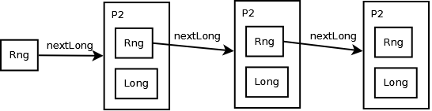
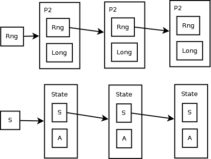

Purely Functional Parallelism
Functional Programming in Java
Created by Mark Perry, @mprry, G+, Blog, LinkedIn, GitHub, maperry78@yahoo.com.au
 |
 |
 |
Introduction
- Learn to manipulate state using RNGs
- Explore issues
- Pattern of any stateful API
Standard RNG
- java.util.Random has imperative API
- Uses side effects
Random rng = new java.util.Random();
rng.nextInt(); // 500348701
rng.nextInt(); // -350347772
rng.nextInt(5); // 4, range = [0, 4]
rng.nextInt(5); // 1
Testability
int rollDie() {
Random rng = new java.util.Random();
return rng.nextInt(6); // [0, 5], but want [1, 6]
}
- Off by one error
- Obvious - complicated defects are subtle
- Need to reproduce reliably
Fixing the RNG?
- Pass in the RNG?
int rollDie(Random rng) {
return rng.nextInt(6); // [0, 5]
}
Functional RNG
- Make the updates explicit!
- Do not mutate RNG
- Return new state as result
- Separate state computation from call sequence
class Rng {
P2<Rng, Integer> nextInt();
P2<Rng, Integer> nextInt(int max); // [0, max - 1]
P2<Rng, Long> nextLong();
P2<Rng, Double> nextDouble();
}
RNG Implementation
// Linear Congruential Generator
class LcgRng {
private long seed;
private LcgRng(long seed) { ... }
static Rng rng(long seed) { ... }
P2<Rng, Long> nextLong() {
long newSeed = (seed * 0x5DEECE66DL + 0xBL) & 0xFFFFFFFFFFFFL;
long n = (Long) (newSeed >>> 16);
return P.p(n, rng(newSeed));
}
}
Rng r = LcgRng.rng(10);
P2<Rng, Integer> p = r.nextLong();
r.nextLong()._2(); // 3847489
r.nextLong()._2(); // 3847489
Rng r2 = r.nextLong()._1();
r2.nextLong()._2(); // 1334288366
RNG Diagram
Pure Stateful APIs
- Make API return next state
- Use same technique
class Foo {
FooState state;
Bar bar();
int baz();
}
class Foo2 {
P2<FooState, Bar> bar(FooState fs);
P2<FooState, Int> baz(FooState fs);
}
Using the API
P2<Rng, P2<Long, Long>> randomPair(Rng rng) {
P2<Rng, Long> p1 = rng.nextLong();
P2<Rng, Long> p2 = p1._1().nextLong();
return P.p(p2._1(), P.p(p1._2(), p2._2()));
}
- Direct use will be tedious
- Refactor repetition
State Abstracton
State Class
class State<S, A> {
F<S, P2<S, A>> run;
static <S, A> State<S, A> unit(F<S, P2<S, A>> f) {...}
P2<S, A> run(S s);
A eval(S s);
S exec(S s);
}
Example Usage
Rng r = LcgRng.rng(10);
State <Rng, Long> s1 = State.state(rng -> rng.nextLong());
P2<Rng, Long> p = s1.run(r);
Long l = s1.eval(r); // 3847489
Rng r2 = s1.exec(r);
// use sequence to get a list of random longs
// static <S, A, B> State<S, List<A>> sequence(List<State<S, A>> list);
List<Long> nums = sequence(List.replicate(10, s1)).eval(r);
Exercises
static <S, A> State<S, A> constant(A a);
static <S, A, B> State<S, B> map(State<S, A> s, F<A, B> f);
static <S, A, B, C> State<S, C> map2(State<S, A> s1, State<S, B> s2, F2<A, B, C> f);
static <S, A, B> State<S, B> flatMap(State<S, A> s, F<A, State<S, B>> f);
static <S, A, B> State<S, List<A>> sequence(List<State<S, A>> list);
static <S, A, B> State<S, List<B>> traverse(List<A> list, F<A, State<S, B>> f);
Imperative Programming
- Sequence of statements modifying program state
- Statements are state transitions
- Program with state with side effects and with RT
Exercises
static <S> State<S, Unit> set(S s);
static <S> State<S, S> get();
static <S, A> State<S, Unit> modify(State<S, A> s, F<S, S> f);
static <S> State<S, S> init();
Afterword
- Functional Programming in Scala, Chiusano and Bjarnason
- Chapter 6, Purely Functional State
|
|
|
Created by Mark Perry, @mprry, G+, Blog, LinkedIn, GitHub, maperry78@yahoo.com.au